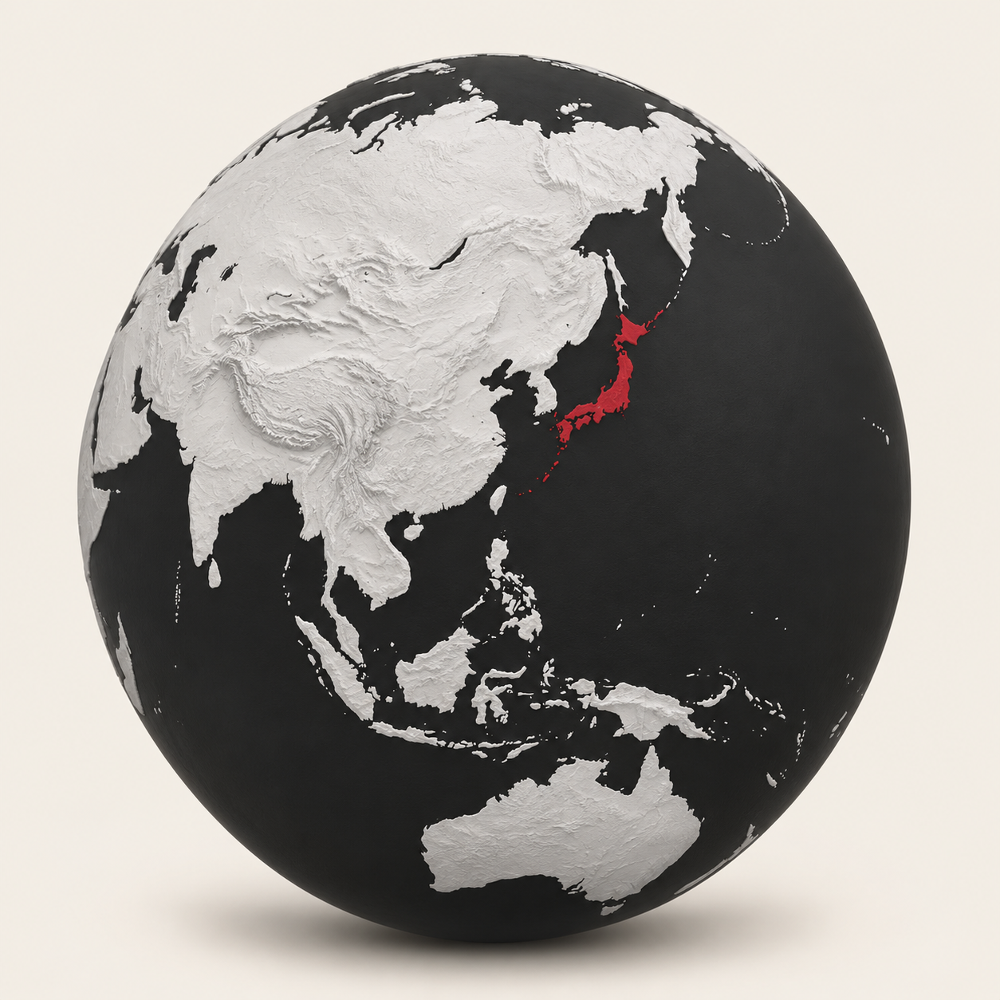

Xoguns e samurais organizaram uma sociedade marcada por dever, hierarquia e lealdade.
日
Liderança · cultura organizacional
01 — 13
Liderança · cultura organizacional
Japão:
cultura, trabalho
e liderança
Da reconstrução do pós-guerra à Sony — e o preço de uma dedicação sem limites.
Arthur Doebeli · Enzo Oliva · Gabriel Souza · Pedro Hang
O país · localização
02 — 13
O país · localização
No extremo
leste da Ásia.
Um arquipélago no oceano Pacífico, próximo à China, às Coreias e à Rússia.

História · quatro viradas
03 — 13
História · quatro viradas
As eras que ajudam a explicar o Japão atual
Estabilidade interna e contato exterior limitado fortaleceram costumes próprios e ordem coletiva.
Abertura, educação e indústria modernizaram o país sem apagar suas tradições.
Reconstrução, qualidade e exportações impulsionaram o milagre econômico.
A cultura atual não “veio dos samurais”: combina valores históricos, modernização industrial e reconstrução coletiva.
A história no cotidiano
04 — 13
A história no cotidiano
A modernização mudou o país. A vida coletiva continuou no centro.
Harmonia
Comunicação mais indireta para evitar constrangimentos.
Coletividade
Filas, silêncio e cuidado para não incomodar outras pessoas.
Ordem
Pontualidade, reverência, formalidade e respeito à hierarquia.
Não são regras para todos, mas mostram uma convivência que tende a priorizar o grupo.
Cultura de trabalho
05 — 13
Cultura de trabalho
Trabalho
como dever.
Lealdade
Forte identificação do profissional com a empresa.
Hierarquia
Sair antes do chefe ou discordar diretamente pode gerar desconforto.
Karoshi
Termo associado a mortes causadas pelo excesso de trabalho.
Oidashi-beya
“Salas de expulsão” denunciadas como pressão para o empregado pedir demissão.
Gestão japonesa
06 — 13
Gestão japonesa
Consenso antes.
Melhoria sempre.
Nemawashi
Construir apoio
A decisão é discutida informalmente antes da aprovação. Pode demorar, mas reduz conflitos na execução.
→
Kaizen
Melhorar aos poucos
Pequenos ajustes contínuos elevam qualidade, eficiência e controle dos processos.
07 — 13
Contraste cultural
Japão
- Hierarquia mais formal
- Decisão por consenso
- Planejamento e padronização
- Visão de longo prazo
Adaptação da gestão
Brasil
- Relações mais informais
- Decisões mais rápidas
- Flexibilidade e improvisação
- Proximidade na comunicação
Disciplina de processos × agilidade cultural
Empresa de destaque
08 — 13
Empresa de destaque · fundada em 1946
SONY
Masaru Ibuka e Akio Morita transformaram uma pequena empresa do pós-guerra em um grupo global de tecnologia e entretenimento.
Sony no Brasil
09 — 13
Sony no Brasil
A operação mudou.
A marca permaneceu.
Chegada ao Brasil e, depois, produção de eletrônicos em Manaus.
Fim da fabricação local e do antigo modelo de venda direta de eletrônicos.
Produtos por distribuidores; PlayStation, música, cinema e soluções profissionais seguem ativos.
BR
Liderança notável
10 — 13
Liderança notável
Akio
Morita
Visão global, ousadia e atenção ao comportamento do consumidor.
- Cofundou a empresa com Masaru Ibuka, em 1946.
- Defendeu um nome simples de pronunciar no mundo: Sony.
- Apostou no Walkman apesar da resistência interna.
- Em 1970, levou a Sony à Bolsa de Nova York.
Uma noite na vida corporativa
11 — 13
Uma noite na vida corporativa
O expediente acabou.
A obrigação social, não.
Jornadas longas
O compromisso com a empresa pode continuar mesmo depois do horário formal.
Nomikai
Confraternizações com colegas e superiores também fortalecem vínculos profissionais.
Perdeu. E agora?
Alguns esperam a manhã em karaokês, hotéis-cápsula, bares ou espaços públicos.
Não é a rotina de todos os japoneses. É uma imagem conhecida do limite entre dedicação profissional, pressão social e vida pessoal.
Trabalho e qualidade de vida
12 — 13
O homem da empresa
Salary
manサラリーマン · sararīman
01Jornadas longas e forte lealdade à empresa.
02Nomikai: confraternização após o expediente com colegas e superiores.
03Quem perde o último trem pode esperar a manhã em bares, karaokês, hotéis-cápsula ou espaços públicos.
O contraste: disciplina e união ajudaram a reconstruir o Japão, mas dedicação sem limite pode causar pressão, exaustão e karoshi.
Conclusão
13 — 13
Conclusão
O desafio não é trabalhar menos por princípio.
É trabalhar sem perder a vida para o trabalho.
O Japão mostra como história, cultura e gestão podem gerar reconstrução, qualidade e inovação — mas também pressão e excesso.
Fontes principais: Sony Group — história e perfil corporativo; Akio Morita Library — cronologia; JETRO — relações de trabalho no Japão; Ministério da Saúde, Trabalho e Bem-Estar do Japão; documento entregue na atividade.